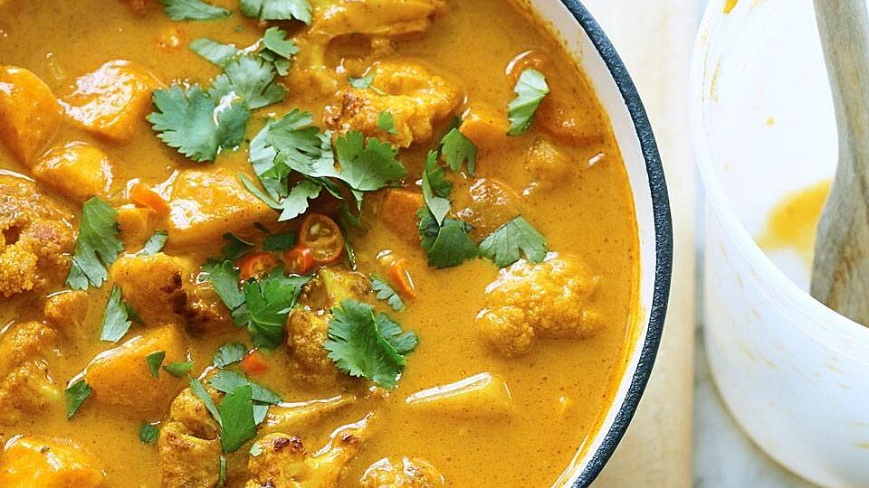

Phaal

This is the world's hottest curry, because it contains the world's hottest chile, the Bhut Jolokia or 'Ghost Chile', which is three times hotter than a habanero. This pan-Asian dish is not for the faint of heart. It is atomically spicy! Enjoy!
Grab the following!
- 2 tomatoes, diced
- ¼ cup water
- 10 cloves garlic, coarsely chopped
- 2 tablespoons grated fresh ginger root
- 1 tablespoon tomato puree
- 1 tablespoon salt
- 3 ghost chile peppers, stemmed and coarsely chopped (use gloves)
- 2 teaspoons chili powder
- 2 teaspoons garam masala
- 1 ½ teaspoons ground cumin
- 1 ½ teaspoons ground coriander
- 1 teaspoon ground fenugreek
- ground black pepper to taste
- 2 pounds cubed lamb
- ¼ cup clarified butter (ghee)
- 1 large onion, diced
- 1 tablespoon chopped fresh cilantro, or to taste
Now make it!
- Place tomatoes, water, garlic, ginger, tomato puree, salt, ghost peppers, chili powder, garam masala, cumin, coriander, fenugreek, and black pepper into a blender and pulse several times to chop. Blend the ingredients until liquefied. Be careful, ghost chilies will burn eyes, mouth, or nose if touched.
- Pour the blended mixture into a large bowl and stir in lamb to coat; let lamb marinate at least 1 hour in refrigerator.
- Heat clarified butter in a large pan over medium-high heat and cook onion until lightly golden brown, 10 to 15 minutes, stirring constantly. Pour the lamb and marinade into the skillet and bring to a boil; cook and stir until sauce begins to thicken, about 5 minutes. Reduce heat to low and simmer until lamb is tender, about 20 more minutes. Garnish with cilantro to serve.
Back to Homepage